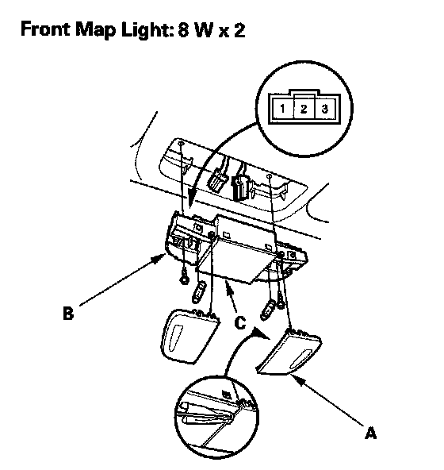
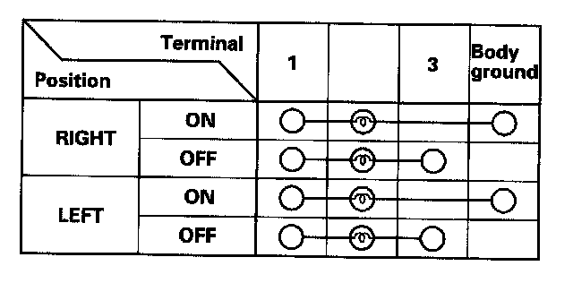
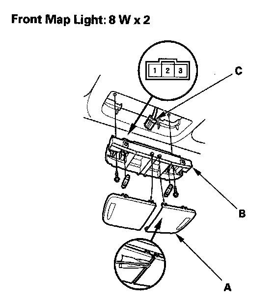
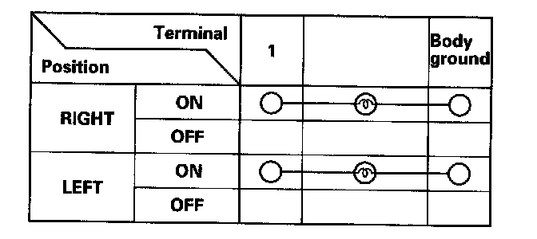

Map Light: Service and Repair
Front Individual Map Light Test/ReplacementWith moonroof
1. Turn the map light switch OFF.

2. Carefully pry the lens (A) off with a small screwdriver.
3. Remove the screws, then remove the map lights (B) and moonroof switch or navigation microphone (C).
4. Disconnect the 3P connector from the map lights and the 10P connector from the moonroof switch or navigation microphone.

5. Check for continuity between the terminals in each switch position according to the table.
6. If the continuity is not as specified, check the bulb(s).If the bulb(s) are OK, replace the light assembly.
7. Install in the reverse order of removal.
Without moonroof
1. Turn the map light switch OFF.

2. Carefully pry the lens (A) off with a small screwdriver.
3. Remove the screws, then remove the map lights (B).
4. Disconnect the 3P connector (C) from the map lights.

5. Check for continuity between the terminals in each switch position according to the table.
6. If the continuity is not as specified, check the bulb(s), If the bulb(s) are OK, replace the light assembly.
7. Install in the reverse order of removal.